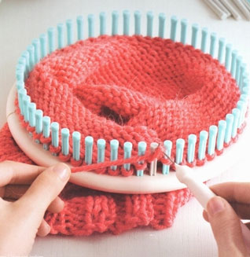
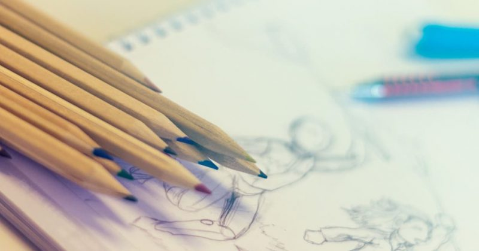

Tejer
A veces la vida se torna gris pero con el tejido y la lana es mucho más alegre y creativa. Tejer te ayuda a romper con todo lo establecido y a crear tu propio ocio, por eso me gusta tanto. TEJER ME AYUDA A SER FELIZ.
Dibujar
Muchas veces me han preguntado "porque dibujo?" y aqui esta la respuesta: Porque no hay nada mas que hacer en la vida. Porque los profesores del colegio lo aburrieron a uno con tanta retorica que el dibujo se convirtio en construccion, diversion y escapismo....... Porque siempre surge una linea fea que hay que corregir. Siempre hay unos Valores con los que se puede Jugar...... Porque es todo lo que uno puede hacer cuando vive como Ser humano. Porque hay que sacar todas esas realidades que se esconden alli en la mente, y lo que no es real volverlo algo imaginadamente posible. Dibujo Porque SI!.Por capricho, y por recurso.. Dibujo en el caminar cuando salgo a pintar......dibujo al entrelasar lineas que se producen y estrellan en el espacio que vivo, al montar en el bus, cuando estoy comiendo y cuando tiendo la cama. A veces suena tonto..... pero en el mirar o mas bien en el pensar algo como dibujo esta el dibujo......A veces todo se convierte en dibujo y uno siente que esta loco....como ahora